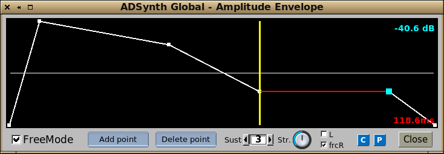
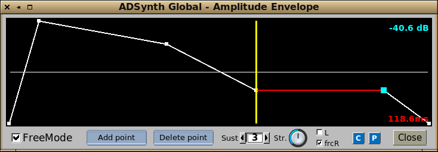
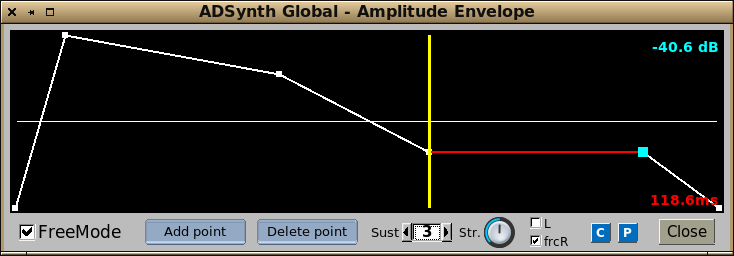

There are actually four envelope types. The bandwidth one in SubSynth has identical controls to the frequency envelope.
A.val Attack start value (not amplitude).
A.dt Attack time.
D.val Decay target value (filter only).
D.dt Decay time (not frequency or bandwidth).
R.dt Release time.
R.val Release target value (not amplitude).
Stretch Anticlockwise envelope is shorter on lower pitch notes and vice-versa.
L Linear (amplitude only).
frcR Forced release (goes to release phase as soon as key is lifted).
The 'E' button opens the graphical window showing the overall envelope shape, where it is then possible to set freemode.

Freemode
This window shows a freemode enabled envelope. This is where all the normal controls have been assigned to fully editable target points. Not only that, but you can add points up to a maximum of 40. This allows you to develop extremely detailed and expressive envelopes.
The yellow vertical is the sustain/release point, and you can have new points both sides of it.
Freemode Enables or disable freemode behaviour.
Add point Creates a new point before the highlighted one (there must be one highlighted).
Delete point Removes the highlighted point. There is a minimum of 3.
Sust (sustain) The point that is to be regarded as the sustain point. Zero gives no sustain.


 
